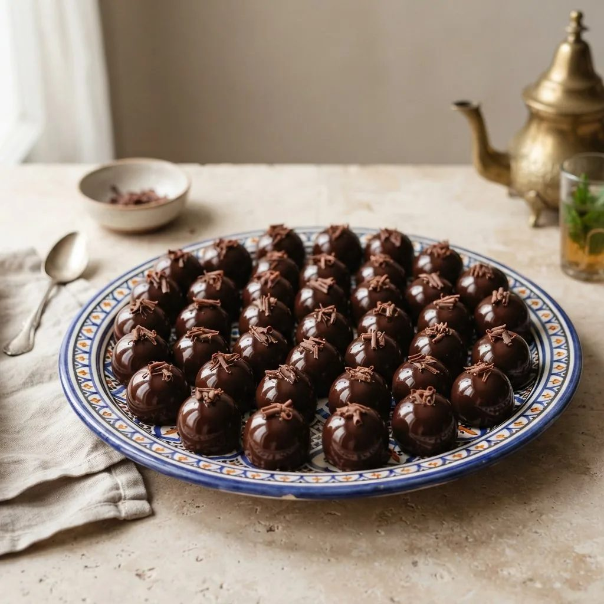

Gâteaux au chocolat
Petit four fondant au chocolat, format individuel, glaçage chocolat brillant.

Appareil
- Chocolat noir150 g
- Beurre100 g
- Sucre120 g
- Œufs3
- Farine50 g
Finition
- Glaçage chocolat brillant100 g
Étapes
- Faire fondre le chocolat et le beurre ensemble au bain-marie.
- Fouetter les œufs et le sucre jusqu'à ce que le mélange blanchisse.
- Incorporer le chocolat fondu puis la farine tamisée.
- Verser dans des mini-moules beurrés, cuire à 170°C pendant 15 à 18 minutes — le cœur doit rester fondant.
- Laisser refroidir puis démouler délicatement.
- Napper de glaçage chocolat brillant avant de servir.
Vous produisez en volume ?
4Cake fournit les professionnels de la pâtisserie au Maroc : chocolat, fruits secs, décors et matériel, avec tarifs et conditionnements grossiste.
Voir les tarifs grossiste